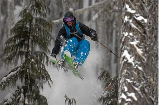

White Pass Ski Resort
Ski with us!


With majestic views of Mt. Rainier, White Pass provides terrain for skiers and riders of every ability. Explore steeper terrain off the Great White Express, or explore Paradise Basin on the Couloir Express and Basin Quads. Our mid-mountain Lodge, The High Camp, is the perfect meeting point for brunch or an afternoon bbq and beer.
White Pass features slopeside lodging at the Village Inn, on-site Child Care, multiple dining options, full-service Learning, Nordic, Rental & Retail Centers, all found in a relaxed family atmosphere. Leave the city behind and escape to White Pass!
White Pass, also known as the Dead Horse Trail, (elevation 873 m or 2,864 ft) is a mountain pass through the Boundary Ranges of the Coast Mountains on the border of the U.S. state of Alaska and the province of British Columbia, Canada. The White Pass Trail is a unit of Klondike Gold Rush National Historical Park, and with the Skagway Historic District makes up a National Historic Landmark. Parts of the historic White Pass trail can be seen from the Klondike Highway and the White Pass and Yukon Route railroad. Much of the old trail has been disturbed by the construction of wagon roads, railroads and highways; however, a portion of the original White Pass Trail used by stampeders in 1897-1899 is still in situ (left undisturbed) today. Most of the areas are difficult to reach, spread throughout the wilderness of the Skagway River valley and into the Yukon over the White Pass. It is not recommended that visitors attempt to hike or gain access to the original route, as it is not marked, maintained or currently used.